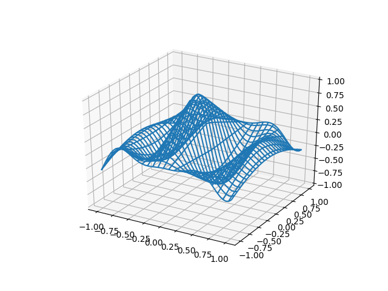

Version 2.2.5
Note
Click here to download the full example code
A very simple 'animation' of a 3D plot. See also rotate_axes3d_demo.
Out:
Average FPS: 26.316746
from __future__ import print_function
from mpl_toolkits.mplot3d import axes3d
import matplotlib.pyplot as plt
import numpy as np
import time
def generate(X, Y, phi):
'''
Generates Z data for the points in the X, Y meshgrid and parameter phi.
'''
R = 1 - np.sqrt(X**2 + Y**2)
return np.cos(2 * np.pi * X + phi) * R
fig = plt.figure()
ax = fig.add_subplot(111, projection='3d')
# Make the X, Y meshgrid.
xs = np.linspace(-1, 1, 50)
ys = np.linspace(-1, 1, 50)
X, Y = np.meshgrid(xs, ys)
# Set the z axis limits so they aren't recalculated each frame.
ax.set_zlim(-1, 1)
# Begin plotting.
wframe = None
tstart = time.time()
for phi in np.linspace(0, 180. / np.pi, 100):
# If a line collection is already remove it before drawing.
if wframe:
ax.collections.remove(wframe)
# Plot the new wireframe and pause briefly before continuing.
Z = generate(X, Y, phi)
wframe = ax.plot_wireframe(X, Y, Z, rstride=2, cstride=2)
plt.pause(.001)
print('Average FPS: %f' % (100 / (time.time() - tstart)))
Total running time of the script: ( 0 minutes 3.852 seconds)
Keywords: matplotlib code example, codex, python plot, pyplot Gallery generated by Sphinx-Gallery